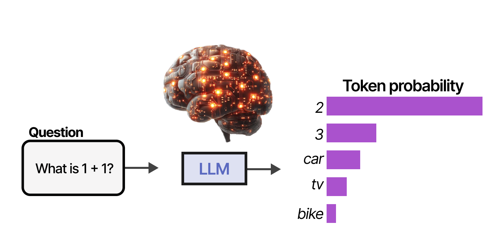

NLP

Natural Language Processing (NLP) is a subfield of artificial intelligence that focuses on the interactions between computers and human language.
NLM Explained in Salesforce TrailheadLLMs
LLMs (Large Language Models) are a type of artificial intelligence that can generate human-like text based on input data. LLMs have been used to create chatbots, language translation tools, and other
NLM Explained in Salesforce Trailhead| French website | App example | Flower site |
| Creator hub | Payment platform | Chore game |